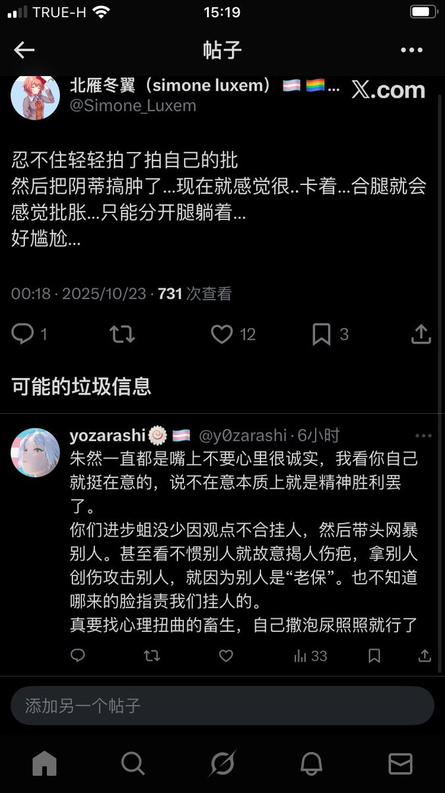

時璃風医詩🍥🌈
@hagishigure
都已經是垃圾信息了你應該做的是block讓這個人永遠無法回復你的推特 眼不見心不煩
我從來不和這種人辯論，一般都是直接發个句號讓大家看看我的無語。

北雁冬翼（simone luxem）🏳️⚧️🏳️🌈🔬
@Simone_Luxem
不是，我寻思我从来都没有嘴上不要呀？我从来没有避讳过我自己的各种欲望吧？我自己的各种缺点，各种理智上清楚但难以克服或勉强克服的潜意识层面的欲望，我都毫不隐瞒地坦白的吧？
最重要的是，我可从来都没有因为某人自己的私生活或仅与其自身相关的私事而指责某人的吧？那我自己的私事，关你毛事？ https://t.co/GxNiVkLSSX